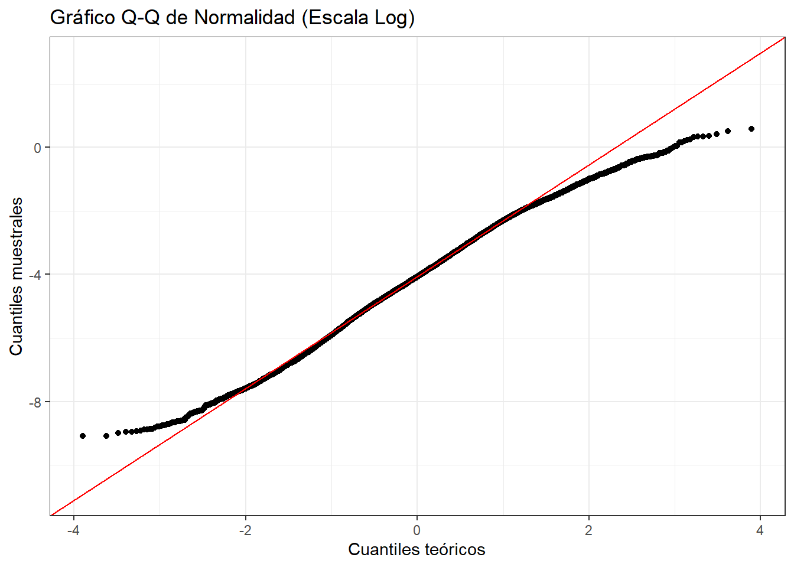

Capítulo 1 Carga y Exploración de Datos
library(readr)
library(dplyr)
library(ggplot2)
library(moments)
library(corrplot)
library(car)
datos <- read_csv("NGACOL.csv")
head(datos)## # A tibble: 6 × 11
## `Hypocenter Depth (km)` Magnitude Rrup_OpenQuake Soil_Class Tmax origen
## <dbl> <dbl> <dbl> <dbl> <dbl> <chr>
## 1 7.21 3.4 2.50 2 0.808 NGAW2
## 2 7.21 3.4 3.30 3 1.08 NGAW2
## 3 7.21 3.4 3.55 3 1.08 NGAW2
## 4 7.21 3.4 3.00 3 1.33 NGAW2
## 5 8.47 3.4 2.53 3 1.67 NGAW2
## 6 8.47 3.4 3.36 2 1.01 NGAW2
## # ℹ 5 more variables: `Seismic Latitude` <dbl>, `Seismic Longitude` <dbl>,
## # `Station Latitude` <dbl>, `Station Longitude` <dbl>, T_0.01_RotD50 <dbl>## spc_tbl_ [10,239 × 11] (S3: spec_tbl_df/tbl_df/tbl/data.frame)
## $ Hypocenter Depth (km): num [1:10239] 7.21 7.21 7.21 7.21 8.47 ...
## $ Magnitude : num [1:10239] 3.4 3.4 3.4 3.4 3.4 3.4 3.45 3.45 3.45 3.48 ...
## $ Rrup_OpenQuake : num [1:10239] 2.5 3.3 3.55 3 2.53 ...
## $ Soil_Class : num [1:10239] 2 3 3 3 3 2 3 3 3 3 ...
## $ Tmax : num [1:10239] 0.808 1.081 1.081 1.333 1.667 ...
## $ origen : chr [1:10239] "NGAW2" "NGAW2" "NGAW2" "NGAW2" ...
## $ Seismic Latitude : num [1:10239] 37.1 37.1 37.1 37.1 36.6 ...
## $ Seismic Longitude : num [1:10239] -122 -122 -122 -122 -121 ...
## $ Station Latitude : num [1:10239] 37.2 37 36.9 37.2 36.6 ...
## $ Station Longitude : num [1:10239] -122 -122 -122 -122 -121 ...
## $ T_0.01_RotD50 : num [1:10239] -6.82 -6.37 -5.96 -5.32 -2.7 ...
## - attr(*, "spec")=
## .. cols(
## .. `Hypocenter Depth (km)` = col_double(),
## .. Magnitude = col_double(),
## .. Rrup_OpenQuake = col_double(),
## .. Soil_Class = col_double(),
## .. Tmax = col_double(),
## .. origen = col_character(),
## .. `Seismic Latitude` = col_double(),
## .. `Seismic Longitude` = col_double(),
## .. `Station Latitude` = col_double(),
## .. `Station Longitude` = col_double(),
## .. T_0.01_RotD50 = col_double()
## .. )
## - attr(*, "problems")=<externalptr>El conjunto de datos tiene 10,239 registros y 11 variables.
Variables categóricas:
Soil_Class: clase de suelo (valores 1 a 5)origen: fuente de los datos (NGAW2 o Colombia)
Variables numéricas:
Magnitude: magnitud del evento sísmicoRrup_OpenQuake: distancia a la ruptura (escala logarítmica)Hypocenter Depth (km): profundidad del hipocentroT_0.01_RotD50: aceleración sísmica (escala logarítmica)Seismic Latitude/Seismic Longitude: coordenadas del eventoStation Latitude/Station Longitude: coordenadas de la estaciónTmax: periodo máximo registrado
1.1 Valores Faltantes
## Hypocenter Depth (km) Magnitude Rrup_OpenQuake
## 0 0 0
## Soil_Class Tmax origen
## 0 35 0
## Seismic Latitude Seismic Longitude Station Latitude
## 0 0 0
## Station Longitude T_0.01_RotD50
## 0 0Se identifican 35 valores NA en la variable Tmax. Las demás
variables están completas. Esto se tendrá en cuenta en los análisis
que involucren dicha variable.
1.2 Transformación a Escala Real
datos <- datos %>%
mutate(
Rrup_real = exp(Rrup_OpenQuake),
Acc_real = exp(T_0.01_RotD50)
)
summary(datos$Rrup_real)## Min. 1st Qu. Median Mean 3rd Qu. Max.
## 0.05 34.93 71.48 105.48 145.28 1532.66## Min. 1st Qu. Median Mean 3rd Qu. Max.
## 0.0001128 0.0052669 0.0169618 0.0552774 0.0566147 1.7931580Las variables Rrup_OpenQuake y T_0.01_RotD50 se encuentran en
escala logarítmica natural. Se transforman a su escala física real
mediante la función exponencial, permitiendo interpretar los valores
en unidades originales (km y g respectivamente).
1.3 Prueba de Normalidad
ggplot(datos, aes(sample = T_0.01_RotD50)) +
stat_qq() +
stat_qq_line(color = "red") +
labs(title = "Gráfico Q-Q de Normalidad (Escala Log)",
x = "Cuantiles teóricos",
y = "Cuantiles muestrales") +
theme_bw()
El gráfico Q-Q muestra que los datos en escala logarítmica se ajustan razonablemente bien a la línea de referencia normal (en rojo), con ligeras desviaciones en las colas. El comportamiento es consistente con la distribución log-normal ampliamente reportada en la literatura sísmica.
1.4 Prueba de Homocedasticidad
## Levene's Test for Homogeneity of Variance (center = median)
## Df F value Pr(>F)
## group 4 31.792 < 2.2e-16 ***
## 10234
## ---
## Signif. codes: 0 '***' 0.001 '**' 0.01 '*' 0.05 '.' 0.1 ' ' 1La prueba de Levene indica evidencia estadística de heterocedasticidad entre clases de suelo (p < 0.05). La varianza de la aceleración no es igual en todos los tipos de suelo, lo cual tiene implicaciones importantes para modelos estadísticos que asuman varianza constante.
1.5 Prueba de Correlación (Pearson)
##
## Pearson's product-moment correlation
##
## data: datos$Rrup_OpenQuake and datos$T_0.01_RotD50
## t = -48.189, df = 10237, p-value < 2.2e-16
## alternative hypothesis: true correlation is not equal to 0
## 95 percent confidence interval:
## -0.4456573 -0.4140782
## sample estimates:
## cor
## -0.4299992El coeficiente de correlación de Pearson es r = -0.43, indicando una relación lineal negativa moderada entre la distancia y la aceleración. El intervalo de confianza al 95% (-0.446, -0.414) confirma que la correlación es estadísticamente diferente de cero (p < 0.001). Esta relación negativa es consistente con el fenómeno de atenuación sísmica: a mayor distancia a la fuente, menor aceleración registrada.